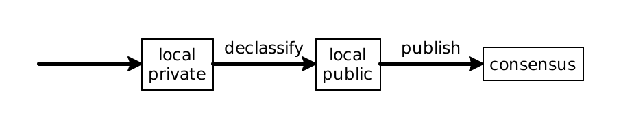

5.3 Language Model
This document describes the fundamental assumptions and concepts of Reach. First, we discuss the model of running a Reach program in Evaluation Model. Next, we discuss the details about compilation of a Reach program that are relevant to Reach programmers in Compilation Model. Finally, we discuss how Reach programs are syntactically constructed in Syntax Model.
This is not an introduction to Reach. We recommend reading the overview for an introduction to what Reach is and the tutorial to get started with programming Reach.
Furthermore, it is not an introduction to consensus networks or "blockchain". If you would like to read such an introduction, we recommend the Wikipedia article on consensus and the Wikipedia article on blockchains.
5.3.1 Evaluation Model
"Many" is a technical term that means "zero or more".
At the start of a Reach computation, the set of participants is not necessarily known and can evolve throughout the execution of the application.
A consensus network is a network protocol with a network token, a set of accounts, a set of contracts, and a time. A network token is an opaque unit of account. A consensus network’s time is some monotonically increasing discrete value from a totally ordered set. A time delta represents the difference between two points in time as a discrete number of time units. Consensus networks support transfers of network tokens between accounts. An account is a unique identity (called an address) with a non-negative balance of network tokens. Accounts may sign values in a way that may not be repudiated or impersonated; this is called publication. Contracts are accounts with three extra capacities: they persistently store values (called the consensus state), they may receive publications, and when they receive publications, they systematically process them and may modify their consensus state, make publications, and may transfer network tokens in response to the reception. The creation of a contract is called deployment. The chapter, Consensus Network Connectors, discusses which consensus networks are supported by Reach.
This description of consensus networks is an abstraction that may not be directly implemented by actual networks.
For example, in UTXO-based networks, there is not typically an explicitly represented account balance ledger. However, such networks do abstractly have accounts with balances, because particular private keys represent accounts which have exclusive access to some set of network tokens which is their balance.
Similarly, Reach’s notion of time may appear overly abstract ("monotonically increasing ... totally ordered set") if you know that many consensus networks are based on blockchains and use the chain length, also called the height or block number, as a notion of time. In this case, time would be a natural number, which is a prototypical model of a totally ordered set. However, Reach is flexible enough to support non-blockchain-based consensus networks, so it does not mandate this particular natural number-based notion of time.
Finally, Reach’s definition of consensus network does not require any particular technology or features of this. In particular, it does not only refer to so-called "layer-1" protocols, nor does it exclude centralized systems with trusted parties controlling the network.
The same account may be used by multiple participants in a DApp.
The contract account must be distinct from all participant accounts.
On some consensus networks, it is possible for transfers to a contract account to occur outside of the purview of Reach. If this occurs, then those network tokens are remitted to the originator of the final consensus transfer.
A DApp computation can be seen as a graph of steps with a unique first step. A step is a set of local steps by participants followed by a single consensus step introduced via a single consensus transfer.
A local step is executed by a single participant and is a sequence of local computations. A local computation may bind a piece of local state, assert a property of the local state, or interact with the frontend. A consensus transfer is executed by a single participant (called the originator) which makes a publication of a set of public values from its local state and transfers zero or more network tokens to the contract account. A consensus transfer specifies an alternative step, called a timeout, that is executed if the originator fails to make the transfer before a given time delta has elapsed. All local state is initially private, until it is explicitly made public via a declassification, which is a kind of local computation.
A consensus step is a graph of consensus computations with a unique first computation. A consensus computation either binds consensus state, asserts a property of the consensus state, performs a transfer, selects between different next consensus computations, or commits to the next step.
An assertion is either: a knowledge assertion, which is a claim that one honest participant cannot know something that another honest participant does know; a static assertion, which is an always-true formula; an assumption, which is a true formula if frontends behave honestly; a requirement, which is a true formula if participants behave honestly; or, a possibility assertion, which is a formula for which there exists some values that honest participants and frontends could submit which results in the truth of the formula.
An honest participant is one that executes the steps specified by the DApp, while an honest frontend is one that only returns values which ensure that all assumptions evaluate to the boolean true.
A value is either: the null value, a boolean, an unsigned integer of 256 bits, a string of bytes, a digest, an address, a fixed tuple of values, a statically-sized homogeneous array of values, or a fixed record of values. Values may be digested to produce a cryptographic hash of their binary encoding.
Values are in one of three possible conditions. They could be consensus state, in which case they are known to all participants. They could be local state of a single participant, which means they are known by only that participant. Local state is further divided into private local state, which cannot be included in a publication, and public local state, which can. These conditions are summarized in figure 1.

5.3.2 Compilation Model
Reach programs cannot execute independently of a consensus network and a set of frontends. Thus, the semantics of Reach treats these components abstractly and does not specify their semantics. Therefore, the semantics of Reach cannot be effectively implemented directly in a virtual machine or interpreter. Instead, Reach programs are compiled to a particular consensus network connector and a set of participant backends which execute the computation of the particular consensus network. Connectors and backends are sound if they faithfully model the abstract semantics assumed by Reach.
During compilation, the Reach compiler automatically verifies that the token linearity property and all static assertions and possibility assertions are true whether participants and frontends are honest or not. Similarly, all knowledge assertions are verified using a conservative approximation of participant knowledge. This conservative approximation assumes that all inputs to a computation are revealed by the result of the computation, except for digests and interaction. This approximation means that Reach cannot, for example, reason about the details of manually expressed encryption formulas and will assume they are insecure.
If these assertions cannot be statically verified, then the compilation process aborts. After this verification, such static assertions and possibility assertions are removed from the program and do not occur at runtime. In contrast, assumptions are enforced at runtime by backends and requirements are enforced at runtime by connectors. If assumptions are violated at runtime, then the backend aborts. If requirements are violated at runtime, then the connector ensures that all aspects of the DApp (the contract and participant) ignore the inducing consensus transfer, which often results in a timeout.
5.3.3 Syntax Model
Reach programs are specified via a subset of well-formed JavaScript syntax inside source files. The section Programs describes the syntax of Reach programs in detail.